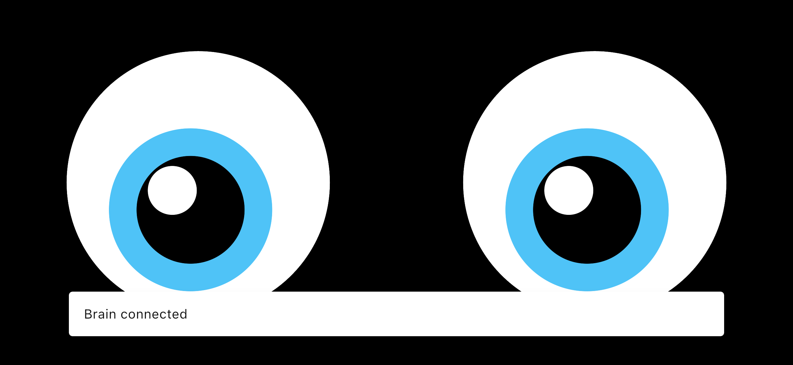

スマホ、PC、SBC、ESP32は全て「同一ネットワーク」に接続した状態で、以下手順を実行してください。
smabo-brainの起動#
最初に、PC/SBCからsmabo-brainを起動します。
cd ~/smabo-brainpython3 -m brainsmabo-webの起動#
次に、PCからsmabo-webを起動します。
cd ~/smabo-webnpm run devこの状態で、ブラウザからhttp://localhost:5173にアクセスしてください。
smabo-brain <-> smabo-webの接続#
smabo-webアクセス時に、右下に「Brain connected」と表示されればOKです。

smabo-appの接続#
smabo-appを起動し、しばらくして「Brain connected」と表示されればOKです。

smabo-brain <-> esp32の接続#
「WS (brain <-> ESP32)」の右側にある「Ping」ボタンをクリックし、OKと表示されれば良いです。

接続できなかった場合
上記手順で通信の疎通が失敗した場合は、
config.jsonのWiFiの設定を確認してください。もし、間違っている箇所があった場合、修正した後esp32に再書き込みしてください。
smabo-web <-> esp32の接続#
「Config」タブの「REST(web <-> ESP32)」の右の「Ping」ボタンをクリックし、OKと表示されれば良いです。